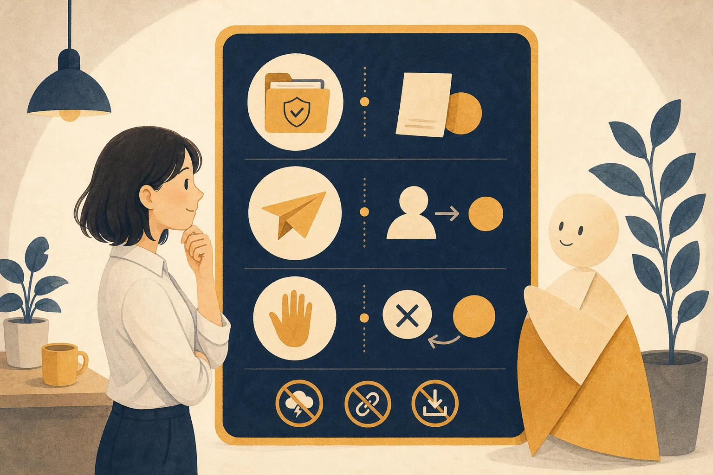
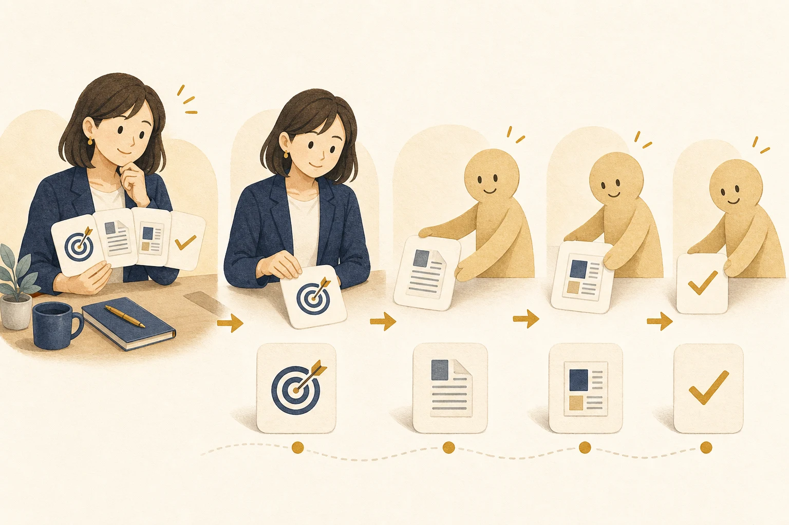
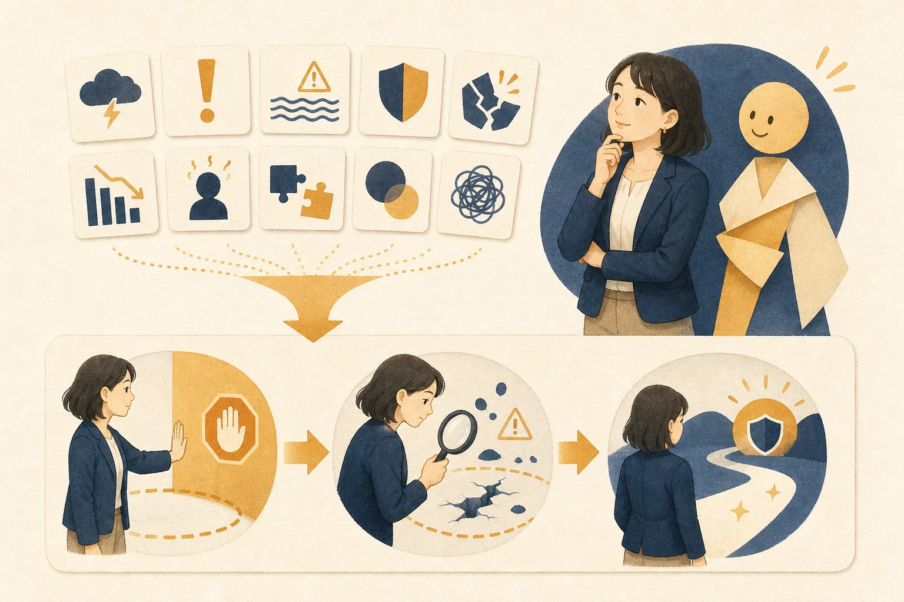
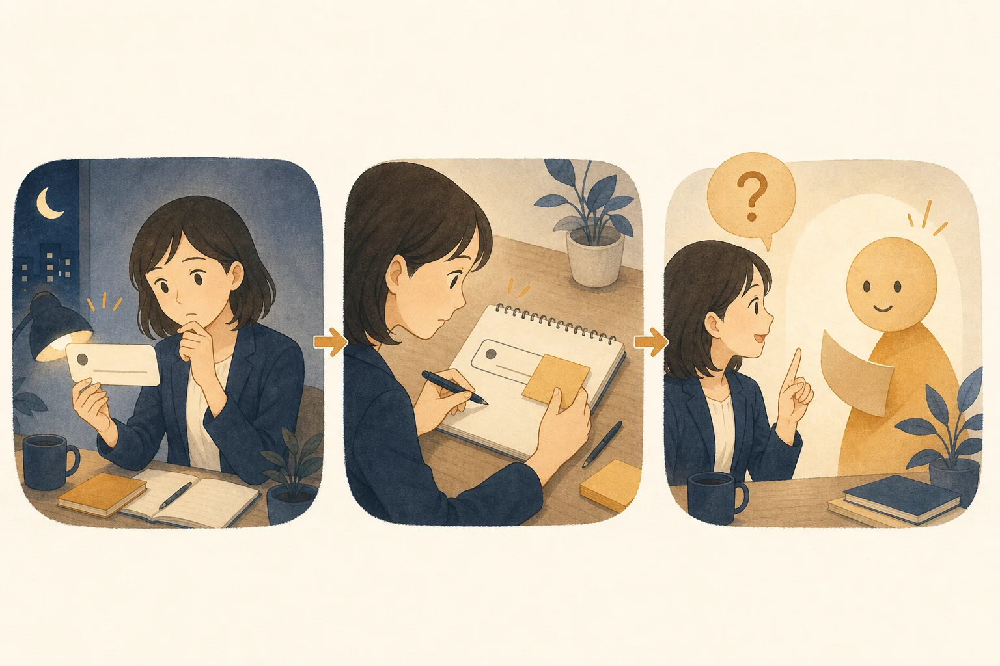

教科書の構成
14章
第0章〜第12章と終章。目次と原稿の章見出しに基づきます。
※ 音が出ます。
仕事机と新人アシスタントの関係を、1枚の絵で見渡します。
コードを書かずに、読む・頼む・確かめるを順番に練習します。
1章ずつ、自分のペースで進められます。
この教科書の進め方を知り、安心して学び始められるようになる。
この教科書は、新人アシスタントとの仕事初日に使う案内書です。あなたは仕事を一つずつ渡します。1章が終わるたびに、休憩してかまいません。
私は画面操作に慣れていません。
作業は一度に一つずつ案内してください。
何かを変更する前に、することを短く説明してください。この教科書では、コードを1行も書きません。あなたが入力する文章は、すべて枠の中に全文を載せます。枠の中をそのままコピーしてください。
ABC商事の佐藤さんは、営業事務の定型業務で練習します。会社名と人物は、すべて架空です。あなたも本物の顧客情報を使わずに進めます。
自分のメモに、3行の依頼文があれば合格です。今日取り組む章を一つ決めていれば、次へ進めます。
Q. 一度に最後まで読む必要がありますか？
A. ありません。1章ごとに休み、別の日に続きを始められます。
Q. パソコン操作に自信がありません。
A. 枠内の文章をコピーして進めます。分からない画面では、先へ進まず止まってください。
Q. 自分の仕事をすぐ使ってよいですか？
A. 第4章までは架空の例だけを使います。安全の約束を知ってから、自分の練習用コピーを使います。
この章でできるようになったことこの教科書の進め方を知り、安心して学び始められるようになる。
Claude Codeに任せられることと、安全確認が必要な理由を説明できるようになる。
Claude Codeは、あなたの仕事机の前に座る新人アシスタントです。質問に答えるだけでなく、渡した資料を読んだり、新しいファイルを作ったりします。手を動かせるため、仕事の範囲を先に伝えることが大切です。
あなたはABC商事の佐藤さんを支える新人アシスタントです。
営業事務で手伝えることを3つ挙げてください。
まだファイルは読まず、変更もしないでください。一般的なチャットAIは、会話の中で答えを返します。Claude Codeは、許可された仕事場所にあるファイルも扱えます。だからこそ、任せる範囲と確認方法を決めて使います。
画面に営業事務の手伝い方が3つあれば合格です。ファイルが増えたり、内容が変わったりしていないことも確認します。
Q. 3つより多く表示されました。
A. 問題ありません。「3つに絞ってください」と送り、返答を短くします。
Q. 英語が混ざりました。
A. 「すべて日本語で書き直してください」と送ります。ほかの条件は変えなくてかまいません。
Q. 何かを変える許可を求められました。
A. 今回は許可しません。変更せず、返答だけにするよう伝えます。
この章でできるようになったことClaude Codeに任せられることと、安全確認が必要な理由を説明できるようになる。
Claude Codeを使う準備を整え、練習用フォルダを仕事場所にできるようになる。
フォルダは、新人アシスタントに渡す仕事机です。机の上に置いたものだけを、今回の仕事に使います。練習専用の机を作ると、大切な資料と混ざりません。
机に置いた練習用ファイルだけを、今回の仕事に使います。
これから練習を始めます。
私は画面操作に慣れていません。
案内は一度に一つずつ、短い日本語で伝えてください。画面の文言はVersionにより異なります。ボタン名が違う場合は、同じ意味の操作を選びます。見つからないときは、公式案内の表示と見比べます。
デスクトップアプリを使えない場合は、Webアプリを使えます。Webアプリにサインインし、練習用コピーだけを添えて進めます。作ってもらったファイルは、自分で「Claude練習」に保存します。
デスクトップに「Claude練習」フォルダがあれば合格です。Claude Codeの画面で依頼への返答も見えていれば、準備は完了です。
Q. 自分のパソコンに合う種類が分かりません。
A. パソコンの設定画面で、MacかWindowsかを確認します。公式案内で同じ名前の種類を選びます。
Q. サインインできません。
A. メールアドレスの入力間違いを確認します。解決しない場合は、新しい登録を増やさず管理者へ相談します。
Q. 「Claude練習」が選べません。
A. いったん画面を閉じ、フォルダがデスクトップにあるか確認します。その後、仕事場所を選ぶ意味の操作からやり直します。
この章でできるようになったことClaude Codeを使う準備を整え、練習用フォルダを仕事場所にできるようになる。
練習用の文書を読むだけの依頼を送り、要約を確認できるようになる。
最初の仕事は、新人アシスタントに資料を読んでもらうことです。机の上の紙を読んで、付せんに要点を書く場面と同じです。原本には書き込ませません。
ダウンロードできない環境では、下の枠をコピーしても同じものが作れます。
ABC商事 営業会議メモ
担当：佐藤さん（営業事務）
日時：4月8日 10時
参加者：佐藤さん、営業担当2名
・見積書のひな形を金曜日までに見直す。
・佐藤さんが木曜日に確認用一覧を用意する。
・来週の会議で新しいひな形を確認する。「営業会議メモ.txt」を読んでください。
大事な点を3つに要約し、この画面に表示してください。
読むだけにして、ファイルは何も変更しないでください。
書かれていない内容は推測しないでください。画面に要点が3つ表示されていれば合格です。「営業会議メモ.txt」を自分で開き、元の文章が変わっていないことも確認します。
3つの要点が元のメモに書かれていれば成功です。新しい日付や担当者が足されていたら、その部分は採用しません。
Q. ファイルが見つからないと言われました。
A. 「営業会議メモ.txt」が「Claude練習」の中にあるか確認します。別の場所にあれば、練習用フォルダへ移します。
Q. 要点が3つになりません。
A. 「3つだけにして、1つを1文で書いてください」と送ります。元のファイルは変更しない条件も残します。
Q. 元の文章が変わったように見えます。
A. 先へ進まず、元のメモを閉じます。練習用コピーを作り直し、読むだけの依頼からやり直します。
この章でできるようになったこと練習用の文書を読むだけの依頼を送り、要約を確認できるようになる。
安全の4つの約束を使い、進めるか止めるかを自分で判断できるようになる。
新人アシスタントにも、勝手にしてはいけない仕事があります。大切な書類を捨てることや、社外へ送ることです。あなたが仕事の境界線を示すと、安全に任せられます。
約束1：練習用コピーで試します。
原本はそのまま残します。「Claude練習」の中に置いたコピーだけを使います。
約束2：秘密を貼りません。
パスワードや本物の顧客情報は入力しません。練習では、架空のABC商事と佐藤さんだけを使います。
約束3：削除・送信・公開・購入の前で止まります。
取り返しにくい作業は、その場で止めます。内容を理解してから、あなたが進めるか決めます。
約束4：「できた」は成果物と証拠で確認します。
返答だけで終わりにしません。ファイルを自分で開き、頼んだ内容になっているか確かめます。
これからは、次の条件を守ってください。
使うのは「Claude練習」フォルダの中だけです。
削除、送信、公開、購入が必要なら、作業前に止まってください。
何をするのか、やさしい日本語で私に確認してください。読めない黒い文字が出たら（読めなくてOK）
表示された文字を読解する必要はありません。見るのは3点だけ:
①「削除」「送信」「公開」「購入」にあたる言葉が説明に含まれていないか
②対象が自分の練習用フォルダの中か
③少しでも不安なら「許可しない」を選び、
「いま何をしようとしたのか、小学生にもわかるように説明して」と打ち返す
断っても壊れません。何度断ってもClaudeは怒りません。
画面の文言はVersionにより異なります。「許可しない」と同じ意味の選択肢を探します。見つからなければ、画面を閉じずに人へ相談します。

4つの約束を、画面を見ずに言えれば合格です。「Claude練習」に本物の顧客情報がないことも、自分の目で確認します。
許可を求める表示で不安を感じたら、止める選択ができます。止めたあとに説明を求められれば、安全確認はできています。
Q. 表示された文字の意味が分かりません。
A. 許可しない選択をします。その後、何をしようとしたのか、やさしい言葉で説明してもらいます。
Q. 顧客名を一つだけ貼ってもよいですか？
A. 練習では貼りません。架空の「ABC商事」に置き換えてから使います。
Q. 間違えて許可したかもしれません。
A. その場で作業を止めます。何を変えたか確認し、判断できなければ管理者へ相談します。
この章でできるようになったこと安全の4つの約束を使い、進めるか止めるかを自分で判断できるようになる。
会議メモから議事録ファイルを作ってもらい、自分で開いて確認できるようになる。
新人アシスタントに、走り書きのメモを渡します。アシスタントは決めた書式に清書し、仕事机へ新しい紙を置きます。あなたは原本と清書を見比べて受け取ります。
ダウンロードできない環境では、下の枠をコピーしても同じものが作れます。
「営業会議メモ.txt」を読んでください。
同じフォルダに「営業会議_議事録.txt」を新しく作ってください。
元のファイルは変更しないでください。
議事録は、次の順にしてください。
1. 件名
2. 日時
3. 参加者
4. 決まったこと
5. 担当と期限
6. 次回確認すること
元のメモにない内容は推測しないでください。
分からない項目には「記載なし」と書いてください。読めない黒い文字が出たら（読めなくてOK）
表示された文字を読解する必要はありません。見るのは3点だけ:
①「削除」「送信」「公開」「購入」にあたる言葉が説明に含まれていないか
②対象が自分の練習用フォルダの中か
③少しでも不安なら「許可しない」を選び、
「いま何をしようとしたのか、小学生にもわかるように説明して」と打ち返す
断っても壊れません。何度断ってもClaudeは怒りません。
「Claude練習」の中に、2つのファイルがあれば合格です。元の「営業会議メモ.txt」と、新しい「営業会議_議事録.txt」です。
議事録を開き、6つの項目が順に並んでいることを確認します。担当と期限が元のメモと一致し、推測した情報がなければ成功です。
Q. 新しいファイルが見つかりません。
A. Claudeの返答で、保存した場所を確認します。「Claude練習」の中へ作り直すよう頼みます。
Q. 元のメモまで変わりました。
A. その場で作業を止めます。原本から練習用コピーを作り直し、元は変えない条件を入れて再開します。
Q. 書かれていない内容が足されています。
A. その議事録は採用しません。「推測した内容を除き、分からない項目は記載なしにしてください」と頼みます。
この章でできるようになったこと会議メモから議事録ファイルを作ってもらい、自分で開いて確認できるようになる。
依頼の型4点セットを使い、望む形へ直してもらえるようになる。
新人アシスタントは、指示が具体的なほど動きやすくなります。渡す資料と完成見本があれば、迷う範囲が減ります。仕事を頼む前の伝票を整える場面と同じです。
悪い依頼1
議事録をいい感じに直してください。何を使うかも、完成の条件も分かりません。新人アシスタントが自分で決める範囲が広すぎます。
良い依頼1
「営業会議_議事録.txt」を直してください。
元ネタは「営業会議メモ.txt」です。
同じフォルダに「営業会議_議事録_修正版.txt」を新しく作ってください。
元の2つのファイルは変更しないでください。
見出しは、次の順にしてください。
1. 件名
2. 日時
3. 参加者
4. 決まったこと
5. 担当と期限
6. 次回確認すること
完成条件は、日時、参加者、担当、期限が元ネタと一致することです。
元ネタにない内容は足さないでください。
分からない項目は「記載なし」にしてください。悪い依頼2
上司向けにしてください。対象も、上司が知りたい内容も分かりません。完成したかを判断する条件もありません。
良い依頼2
「営業会議_議事録_修正版.txt」を使ってください。
同じフォルダに「上司確認用_営業会議.txt」を新しく作ってください。
元のファイルは変更しないでください。
上から、次の順に並べてください。
1. 会議の結論
2. 担当と期限
3. 次回確認すること
4. 記載が足りない点
完成条件は、10行以内で元ネタの内容だけを使っていることです。
判断できない内容は「記載なし」にしてください。
「Claude練習」に、修正版と上司確認用の2つがあれば合格です。両方を自分で開き、元のファイルと見比べます。
見出しの順、10行以内、推測なしを確認します。元の2つのファイルが変わっていないことも証拠です。
Q. 頼んだ見出しの順になりません。
A. 良い依頼をもう一度送ります。「見出し名と順番を変えないでください」と添えます。
Q. 元ネタにない説明が増えました。
A. その成果物は採用しません。増えた箇所を除き、分からない点を「記載なし」に直してもらいます。
Q. どこまで細かく書けばよいですか？
A. 4点セットが入り、自分で合否を決められれば十分です。見た目の好みは、確認後に追加できます。
この章でできるようになったこと依頼の型4点セットを使い、望む形へ直してもらえるようになる。
わざと間違った変更を試し、直前の状態へ戻せるようになる。
作業履歴ノートには、アシスタントが直した順番が残ります。書き間違えても、一つ前のページを見て戻せます。戻し方を知ると、安心して仕事を任せられます。
戻したあとは、意図した変更だけが消えたかを自分で確かめます。
「営業会議_議事録_修正版.txt」の最後に、
「次回会議は12月31日に決定」と1行追加してください。
これは、戻す練習のためのわざと間違った変更です。
ほかの行と、ほかのファイルは変更しないでください。直前に「営業会議_議事録_修正版.txt」へ加えた、
「次回会議は12月31日に決定」という1行だけを取り消してください。
それより前の内容と、ほかのファイルは変更しないでください。
終わったら、取り消した行をこの画面に表示してください。読めない黒い文字が出たら（読めなくてOK）
表示された文字を読解する必要はありません。見るのは3点だけ:
①「削除」「送信」「公開」「購入」にあたる言葉が説明に含まれていないか
②対象が自分の練習用フォルダの中か
③少しでも不安なら「許可しない」を選び、
「いま何をしようとしたのか、小学生にもわかるように説明して」と打ち返す
断っても壊れません。何度断ってもClaudeは怒りません。
画面の文言はVersionにより異なります。やり直しにあたる表示が見つからなくても、同じ会話で直前の変更を具体的に伝えられます。
修正版に「次回会議は12月31日」がなければ合格です。それ以外の内容が、練習前と同じことも確認します。
Claudeの返答だけを証拠にしません。自分でファイルを開き、戻った状態を見ます。
Q. 違う行まで消えました。
A. その場で止めます。元ネタと見比べ、直前の変更だけを取り消すよう頼み直します。
Q. 何を戻すのか聞かれました。
A. ファイル名と、追加した1行をそのまま伝えます。ほかは変えない条件も残します。
Q. 元の状態が分からなくなりました。
A. 第6章で残した元のファイルと見比べます。判断できなければ、練習を止めて人へ相談します。
この章でできるようになったことわざと間違った変更を試し、直前の状態へ戻せるようになる。
良い依頼をレシピカードとして保存し、同じ仕事に使えるようになる。
毎週の料理を、記憶だけで作る必要はありません。材料と完成の見分け方をレシピカードに残せます。仕事の依頼も同じ形で使い回せます。
同じフォルダに「週次議事録レシピ.txt」を新しく作ってください。
内容は、次の文章だけにしてください。
週次議事録レシピ
何を：会議メモを議事録へ整える。
どこから：依頼時に指定された会議メモのファイル。
どんな形に：依頼時に指定された新しいファイル。
見出しの順番：
1. 件名
2. 日時
3. 参加者
4. 決まったこと
5. 担当と期限
6. 次回確認すること
完成条件：
・元のメモにある内容だけを使う。
・分からない項目は「記載なし」にする。
・元のファイルは変更しない。
・同じ名前の成果物があれば、変更前に止まる。「週次議事録レシピ.txt」を読んでください。
元ネタは「営業会議メモ.txt」です。
成果物は「営業会議_議事録_レシピ確認.txt」です。
レシピどおりに作ってください。
作業後に、完成条件を一つずつ確認して結果を表示してください。「Claude練習」にレシピと確認用議事録があれば合格です。レシピを開き、4点セットと6つの見出しを確認します。
確認用議事録も自分で開きます。元のメモと一致し、元のファイルが変わっていなければ成功です。
Q. レシピだけで元ネタが決まりません。
A. 毎回、元ネタのファイル名を伝えます。似た名前が複数あるときは、作業前に止めてもらいます。
Q. 前の成果物が上書きされそうです。
A. 許可しません。新しいファイル名を決めてから、もう一度頼みます。
Q. 毎週、条件が少し変わります。
A. 変わらない条件だけをレシピに残します。その週だけの条件は、依頼時に追加します。
この章でできるようになったこと良い依頼をレシピカードとして保存し、同じ仕事に使えるようになる。
議事録から1枚のレポートを作り、ブラウザとPDFで確認できるようになる。
新人アシスタントが、文字だけの報告を1枚の掲示物へ整えます。大事な結論が先に見え、担当と期限も探しやすくなります。あなたは印刷前の見本を確認します。
「営業会議_議事録_修正版.txt」を使ってください。
同じフォルダに「営業会議_1枚レポート.html」を新しく作ってください。
元のファイルは変更しないでください。
上から、次の順に見せてください。
1. ABC商事 営業会議レポート
2. 会議の結論
3. 担当と期限
4. 次回確認すること
5. 記載が足りない点
落ち着いた紺色と白を使ってください。
文字は読みやすい大きさにしてください。
印刷したときにA4用紙1枚へ収まる形にしてください。
元ネタにない内容や、外から集めた情報は入れないでください。
完成後に、入れた内容をこの画面で報告してください。画面の文言はVersionにより異なります。同じ意味の操作を選び、保存前の見本で1枚かを確かめます。
同じ内容のHTMLとPDFが1つずつあれば合格です。両方を自分で開き、見出しと文章を見比べます。
PDFが1枚で、文字が途中で切れていないことを確認します。元ネタにない内容がなければ、人へ見せる前の確認は完了です。
Q. ブラウザで文字だけが並びます。
A. ファイル名の最後が「.html」か確認します。違っていれば、その名前で作り直してもらいます。
Q. PDFが2枚になります。
A. 保存前の見本を閉じます。「A4用紙1枚へ収まるよう、余白と文字の大きさを整えてください」と頼みます。
Q. 文字が小さすぎます。
A. その資料は採用しません。内容を短くし、本文を読みやすい大きさへ直してもらいます。
この章でできるようになったこと議事録から1枚のレポートを作り、ブラウザとPDFで確認できるようになる。
事故につながる初期症状を見つけ、作業前に正しい行動を選べるようになる。
新人アシスタントとの仕事にも、立入禁止の札が必要です。小さな違和感は、事故を避けるための早い合図です。合図を見たら、進まずに境界線を確かめます。
事故1：本物の顧客名簿で練習する
初期症状→練習用フォルダに、本物の会社名や連絡先があります。 なぜ危ない→秘密を、練習のために扱うことになります。 正しい行動→原本を閉じ、架空のABC商事と佐藤さんに置き換えます。
事故2：「全部消して整理して」と頼む
初期症状→対象を決めずに、全部を消す依頼を書いています。 なぜ危ない→必要なファイルまで失うおそれがあります。 正しい行動→依頼を送らず、残す物と対象を一つずつ決めます。
事故3：パスワードを貼る
初期症状→依頼文や元ネタに、パスワードが入っています。 なぜ危ない→本人だけが知る秘密として守れなくなります。 正しい行動→貼らずに伏せ字へ置き換え、必要なら管理者へ相談します。
事故4：確認画面を読まずに進める
初期症状→対象や作業の説明を見ず、すぐ許可しようとしています。 なぜ危ない→想定外の変更を見逃します。 正しい行動→許可せず、対象と「削除・送信・公開・購入」を確認します。
事故5：仕事場所を広くしすぎる
初期症状→パソコン上の多くのファイルがある場所を選んでいます。 なぜ危ない→練習と関係のない資料まで対象になりえます。 正しい行動→「Claude練習」だけを仕事場所に選び直します。
事故6：確認前に人へ送る
初期症状→成果物を開く前に、メールなどで送ろうとしています。 なぜ危ない→誤りや秘密を含んだまま相手へ届くおそれがあります。 正しい行動→送信前に止め、自分で開いて元ネタと見比べます。
事故7：確認前に公開する
初期症状→内容や見える相手を確かめず、公開しようとしています。 なぜ危ない→取り消す前に、多くの人へ見られるおそれがあります。 正しい行動→公開前に止め、内容と見える相手を人と確認します。
事故8：内容を見ずに購入する
初期症状→金額や期間を確認せず、購入へ進もうとしています。 なぜ危ない→不要な費用や継続支払いが発生するおそれがあります。 正しい行動→購入前に止め、金額、期間、解約条件を人と確認します。
事故9：原本だけで試す
初期症状→戻すための練習用コピーがありません。 なぜ危ない→変更後に、正しい元の状態を確認できません。 正しい行動→原本を閉じ、練習用コピーを作ってから始めます。
事故10：返答だけで「できた」と決める
初期症状→完了という返答を見て、成果物を開かず終えようとしています。 なぜ危ない→保存場所、内容、元ネタとの違いを見落とします。 正しい行動→成果物を自分で開き、完成条件を一つずつ確認します。
この会話では、安全確認役もしてください。
私の依頼に、削除、送信、公開、購入、本物の顧客情報、秘密が含まれたら、
作業を始めず、どこが危ないかをやさしい日本語で説明してください。
使う場所が「Claude練習」の外なら、作業を始めないでください。
10例のうち3例を、何も見ずに説明できれば合格です。それぞれの正しい行動まで言います。
Claudeの返答に、安全確認の条件が6つあれば成功です。削除、送信、公開、購入、顧客情報、仕事場所の6つです。
Q. 危ないか判断できません。
A. 許可せず止めます。作業内容をやさしい日本語で説明してもらい、人にも相談します。
Q. 本物か架空か分かりません。
A. 本物として扱います。確認できるまで、依頼文や練習用フォルダへ入れません。
Q. もう送ってしまいました。
A. 追加の送信を止めます。送った相手と内容を確認し、すぐ管理者へ報告します。
この章でできるようになったこと事故につながる初期症状を見つけ、作業前に正しい行動を選べるようになる。
自分の定型業務を一つ選び、成果物と証拠まで自走できるようになる。
今日は、新人アシスタントへ一つの仕事を任せる日です。あなたは仕事机を整え、レシピカードを渡します。最後は作業履歴ノートと成果物を自分で確認します。
次のチェック欄を、上から順に進めます。飛ばした欄があれば、その一つ前へ戻ります。
卒業制作として、私の定型業務を一つ整えます。
最初に、次の4点を一つずつ質問してください。
1. 何をしてほしいか
2. どのファイルを元ネタにするか
3. どんな名前と形の成果物にするか
4. どうなったら完成か
4点がそろうまで、ファイルは変更しないでください。
4点がそろったら、私が送る依頼文の案を画面に表示してください。
その時点でも、まだファイルは変更しないでください。今まとめた依頼文案に、次の安全条件を加えてください。
使うのは「Claude練習」フォルダの中だけです。
元ネタは変更しないでください。
元ネタにない内容は推測しないでください。
削除、送信、公開、購入が必要なら、作業前に止まってください。
同じ名前の成果物がある場合も、作業前に止まってください。
条件を加えた依頼文の全文を画面に表示し、まだ作業は始めないでください。いま確認した依頼文の内容で、成果物を作ってください。
終わったら、完成条件を一つずつ確認してください。
確認結果と成果物の保存場所を、この画面に表示してください。読めない黒い文字が出たら（読めなくてOK）
表示された文字を読解する必要はありません。見るのは3点だけ:
①「削除」「送信」「公開」「購入」にあたる言葉が説明に含まれていないか
②対象が自分の練習用フォルダの中か
③少しでも不安なら「許可しない」を選び、
「いま何をしようとしたのか、小学生にもわかるように説明して」と打ち返す
断っても壊れません。何度断ってもClaudeは怒りません。
次の5つすべてに印を付けられれば合格です。
成果物を開いた画面が証拠です。完成条件の確認結果も、同じ会話に残します。
Q. 定型業務を一つに絞れません。
A. 元ネタが一つで、成果物も一つの仕事を選びます。ABC商事の議事録作りでも合格です。
Q. 4つの質問に答えられません。
A. 分からない点を「未確認」と答えます。推測で埋めず、その点を完成条件から外しません。
Q. 途中で危険な行動が必要になりました。
A. その場で止めます。今回は成果物を練習用フォルダへ作るところまでにします。
この章でできるようになったこと自分の定型業務を一つ選び、成果物と証拠まで自走できるようになる。
困った表示を「読む・写す・聞く」の3手順で解決へ進められるようになる。
新人アシスタントへ、電話の伝言を正確に渡す場面と同じです。見えた文章を省かずに渡すと、状況を調べやすくなります。分からないまま先へ進む必要はありません。
上に貼った表示について教えてください。
私は画面操作に慣れていません。
何が起きたのかを、やさしい日本語で説明してください。
まだ同じ作業をやり直さず、次に確認することを一つだけ教えてください。
ファイルは変更しないでください。いまの画面だけで質問したいときは、次の依頼文も使えます。
いまの画面で、私は何をすればよいですか？
作業は進めず、最初に確認する場所を一つだけ教えてください。
画面の言葉が違う場合は、同じ意味の目印を教えてください。画面の文言はVersionにより異なります。正確なボタン名ではなく、同じ意味の目印を聞きます。

「読む・写す・聞く」を順番どおり言えれば合格です。返答に、起きたことと次の確認が一つずつあれば成功です。
案内を受けても、すぐに変更はしません。対象と影響を理解してから、進めるか決めます。
Q. 表示された文章を選べません。
A. 画面を閉じず、見える範囲を正確にメモします。省いた部分があることも伝えます。
Q. 表示に秘密が含まれています。
A. そのまま貼りません。秘密の部分を伏せ字にし、伏せた場所があると伝えます。
Q. 説明を読んでも分かりません。
A. 「小学生にも分かる言葉で、一つずつ説明してください」と聞き直します。分かるまで作業は止めます。
この章でできるようになったこと困った表示を「読む・写す・聞く」の3手順で解決へ進められるようになる。
身につけたことを棚卸しし、本編で次に学ぶ内容を選べるようになる。
新人アシスタントとの初日が終わりました。あなたの仕事机には、依頼の型と安全の約束があります。次は、任せる仕事の種類を少しずつ増やします。
この会話で私が取り組んだ内容を振り返ってください。
できるようになったことを3つにまとめてください。
次に練習するとよい仕事を一つ提案してください。
まだファイルは変更しないでください。本編では、扱う仕事と新しい言葉が増えます。分からない言葉は、第12章の聞き方で一つずつ確認します。安全の4つの約束は、そのまま使い続けます。
5項目すべてに印があれば、この教科書は修了です。足りない項目があれば、その章だけやり直せます。
新しいタブに本編の目次が見えれば、次へ進む準備も完了です。元のタブには、この教科書が残ります。
Q. 5項目すべてに印が付きません。
A. 修了を急ぐ必要はありません。印がない項目に対応する章を、もう一度試します。
Q. 本編を開くと知らない言葉が増えます。
A. 分からない言葉を一つだけ選び、やさしく説明してもらいます。全部を一度に覚える必要はありません。
Q. 次に何を練習するか決まりません。
A. ABC商事の議事録レシピを、別の架空メモで繰り返します。慣れてから自分の定型業務へ広げます。
この章でできるようになったこと身につけたことを棚卸しし、本編で次に学ぶ内容を選べるようになる。